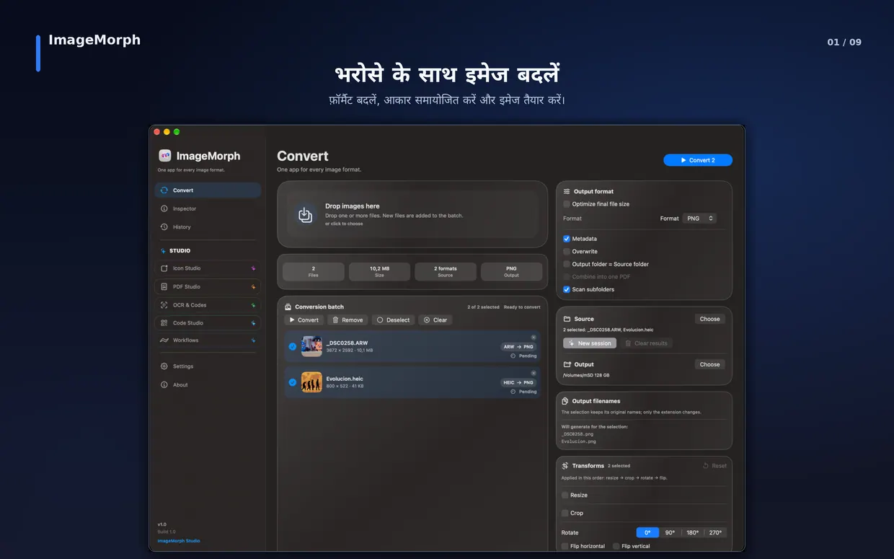
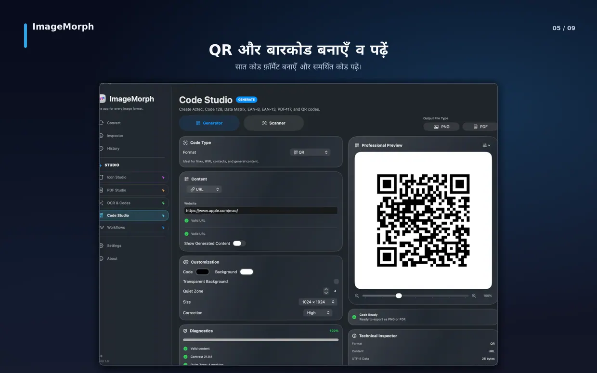
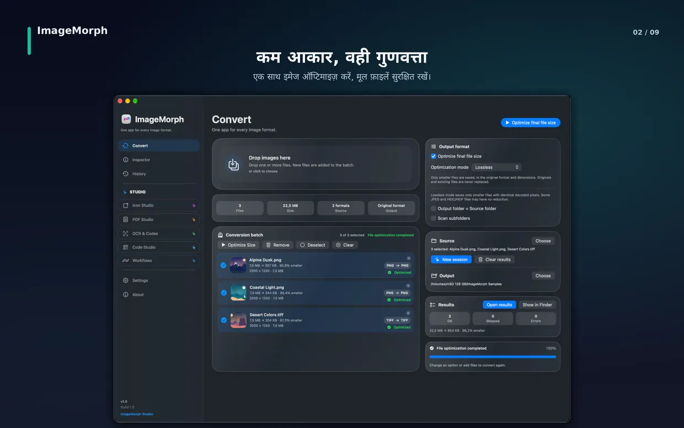
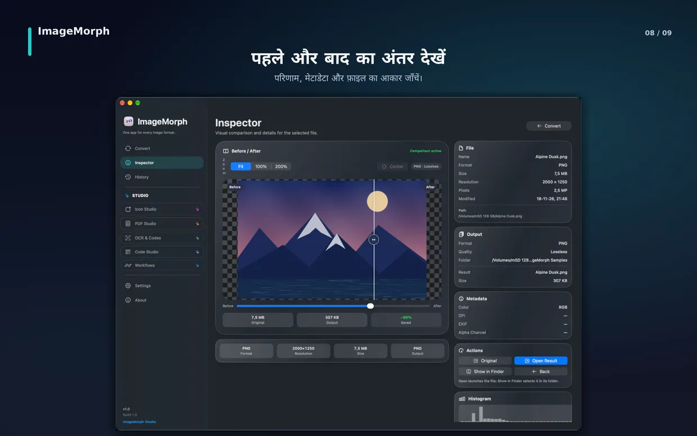
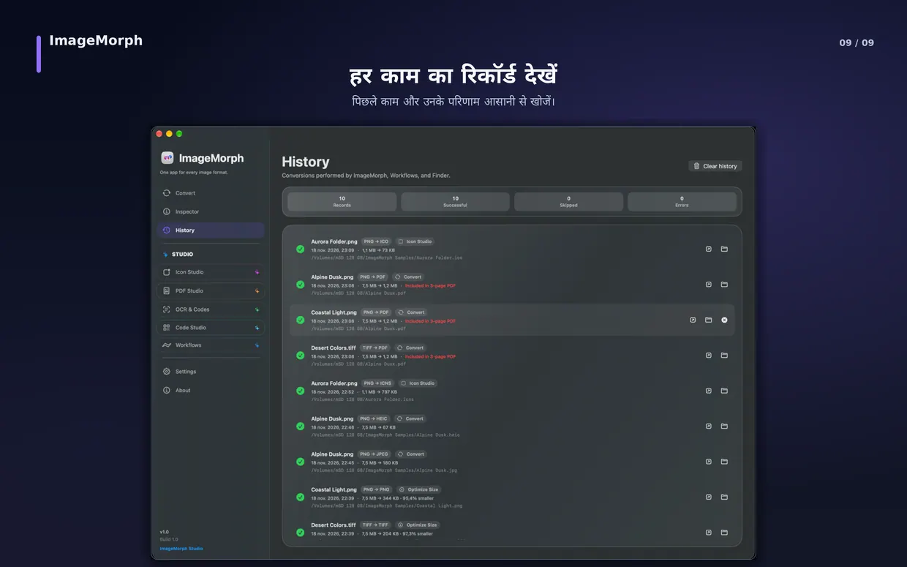
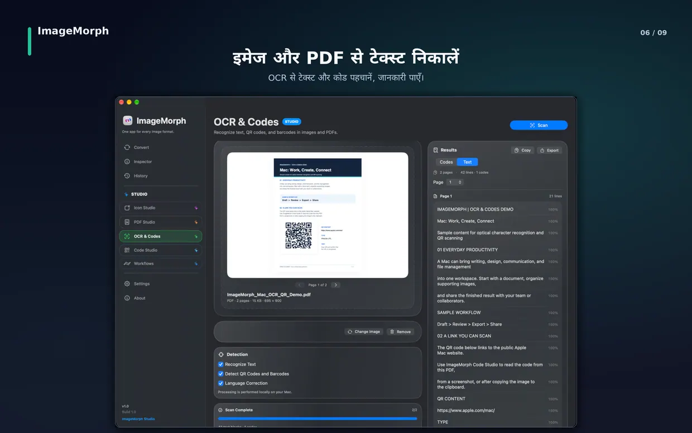
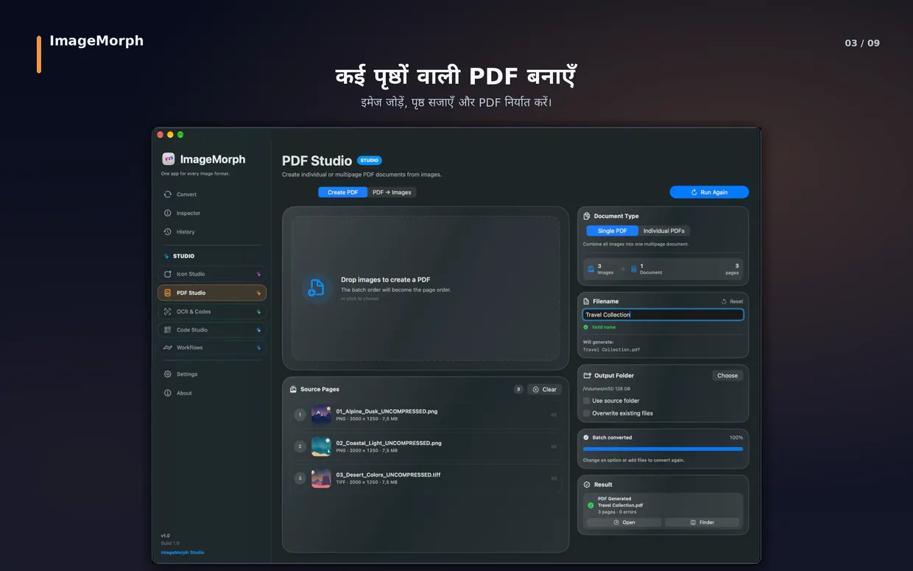
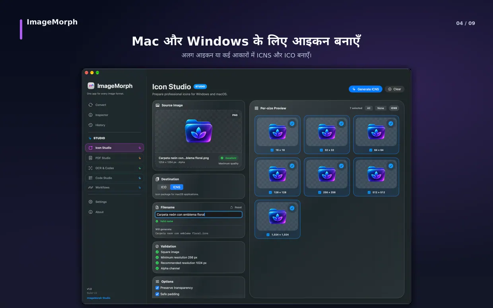
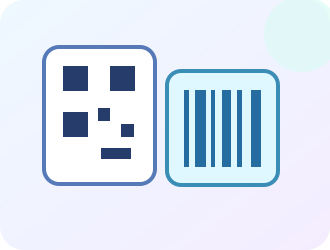
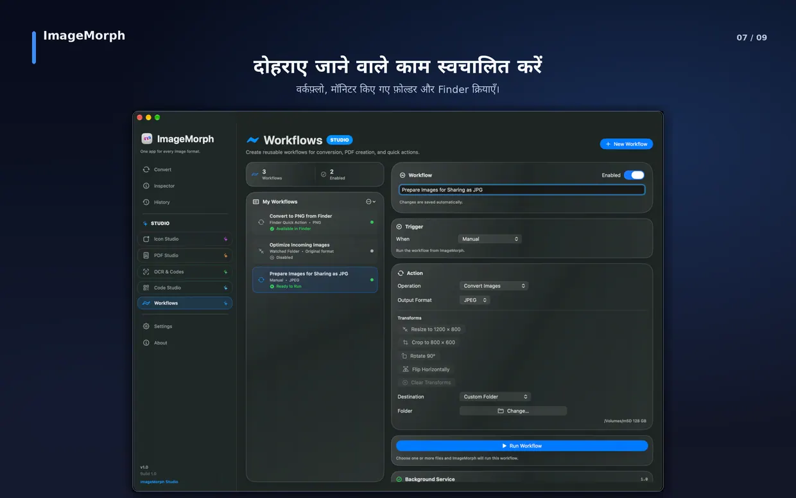

JPEG · PNG · HEIC · TIFF
JPEG, PNG, HEIC और TIFF फ़ाइलों पर अलग-अलग या बैच में काम करें।

Mac पर छवियाँ बदलें, उनका आकार और गुणवत्ता अनुकूलित करें। PDF बनाएँ और बार-बार होने वाले काम स्वचालित करें।
Mac App Store पर लॉन्च की तैयारी जारी है।

Mac पर छवियाँ बदलें, उनका आकार और गुणवत्ता अनुकूलित करें। PDF बनाएँ और बार-बार होने वाले काम स्वचालित करें।

छवियों और कई पृष्ठों वाले PDF से पाठ पहचानें और परिणाम निर्यात करें।
ईमेल या PDF में मिले QR को Mac पर पढ़ें और लिंक खोलने से पहले उसका पता देखें।


URL का पूर्वावलोकन वेबसाइट की सुरक्षा की गारंटी नहीं है। डोमेन जाँचें और अनजान साइट पर निजी जानकारी न दें।
कोड टूल देखेंJPEG, PNG, HEIC और TIFF फ़ाइलों पर अलग-अलग या बैच में काम करें।

अलग-अलग ज़रूरतों के लिए चित्रों का आकार और अनुपात बदलें। आवश्यकता पड़ने पर मूल अनुपात बनाए रखें।

समर्थित हानिरहित या हानिपूर्ण ऑप्टिमाइज़ेशन; आउटपुट तभी जब छोटा हो।

फ़ॉर्मैट, आयाम और मेटाडेटा देखें। बदलने के बाद परिणाम की मूल फ़ाइल से तुलना करें।

पिछले काम और नतीजे देखें। फ़ाइलें मौजूद हों तो उन्हें खोलें या Finder में दिखाएँ।

Studio में OCR, कोड पढ़ना, PDF उपकरण, आइकन और स्वचालन शामिल हैं। एक बार खरीदें, सदस्यता नहीं।
Studio एक वैकल्पिक स्थायी इन-ऐप ख़रीद है।

छवियों और कई पृष्ठों वाले PDF से पाठ पहचानें और परिणाम निर्यात करें।


क्लिपबोर्ड, चित्र, PDF या फ़ोल्डर से कोड पढ़ें या संगत कैमरा और स्कैनर से कैप्चर करें। खोलने से पहले लिंक जाँचें।


बहुपृष्ठ PDF बनाएँ, पृष्ठों को छवियों में बदलें और घुमाएँ।

ICO और ICNS फ़ाइलें बनाएँ और निर्यात से पहले आकार जाँचें।


QR, Code128, Data Matrix, EAN, PDF417 और Aztec को PNG या PDF में निर्यात करें।

वर्कफ़्लो सहेजें, फ़ोल्डर पर नज़र रखें और Finder से कार्रवाई शुरू करें।

| सुविधा | Free | Studio |
|---|---|---|
| रूपांतरण, आकार और ऑप्टिमाइज़ेशन | शामिल | शामिल |
| कतार, Inspector, तुलना, हिस्टोग्राम | शामिल | शामिल |
| सामान्य PDF निर्माण | शामिल | शामिल |
| PDF Studio और पृष्ठ निर्यात | — | शामिल |
| OCR और कोड पहचान | — | शामिल |
| कोड निर्माण और कैमरा/स्कैनर कैप्चर | — | शामिल |
| ICO और ICNS आइकन सेट | — | शामिल |
| वर्कफ़्लो, निगरानी फ़ोल्डर और Finder क्रियाएँ | — | शामिल |
स्थानीय मूल्य, Studio पहुँच और ट्रायल पात्रता ऐप में दिखती है। ख़रीद और पुनर्स्थापना Apple सेवाओं से होती है।
छवि रूपांतरण, अनुकूलन, PDF निर्माण और OCR आपके Mac पर ही होते हैं। फ़ाइलों की सामग्री Studio परीक्षण सेवा को नहीं भेजी जाती। फ़ाइल, फ़ोल्डर, कैमरा और स्कैनर के लिए अनुमति आवश्यक है; सेटिंग, इतिहास, बुकमार्क, नाम, पथ और त्रुटि लॉग स्थानीय रूप से रह सकते हैं।
गोपनीयता नीति पढ़ें